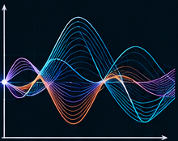

The Modern
Maker’s Toolkit
Entdecke die Werkzeuge der Entwickler – ganz ohne Programmieren.
Lerne, mit VS Code, Markdown, Git und KI-Agenten deine eigenen Projekte zu organisieren, Ideen zu entwickeln und interaktive Werkzeuge zu erstellen.
Ob Physik, Mathematik, Wirtschaft, Reisen, Berge, Segeln, Studium oder dein ganz persönliches Projekt.

Die Werkzeuge
Terminal
Befehle tippen statt klicken.
VS Code
Dein Arbeitsplatz für alle Projekte.
Git
Versionen, Änderungen, sicher ausprobieren.
Markdown
Einfach schreiben, strukturieren, zusammenarbeiten.
KI-Agenten
Ideen planen, recherchieren und umsetzen.
Interaktive Ergebnisse
Schöne Visualisierungen, kleine Apps und praktische Werkzeuge.
Beispiel-Projekte

Physik & Mathematik
Modelle erforschen, Simulationen erstellen, Zusammenhänge visualisieren.
Bergtouren planen
Routen, Karten und Wetter analysieren und interaktive Tourenplanung erstellen.
Segelreise vorbereiten
Routen, Häfen, Wetter und Checklisten in einem persönlichen Reise-Tool kombinieren.
Wirtschaft verstehen
Daten analysieren, Modelle bauen und Zusammenhänge verständlich visualisieren.
Für wen ist der Workshop?
& Abiturient:innen
Die neugierig sind und eigene Projekte umsetzen möchten.
(alle Fachrichtungen)
Die ihre Ideen, Notizen und Forschungsprojekte besser organisieren und umsetzen wollen.
& Kreative
Die moderne Werkzeuge kennenlernen und praktisch ausprobieren möchten.
Eine Session von
Till & Henri